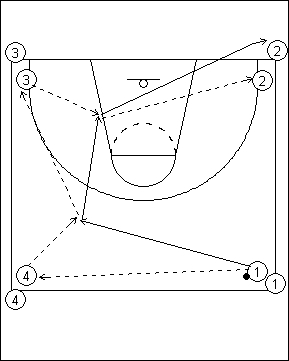

Catégorie : PASSES (Pas-003)
Déroulement
- Quatre files. Le premier joueur de la file 1 possède un ballon.
- Le premier joueur de la file 1 passe au premier de la file 4 qui lui remet le ballon. Il passe alors au premier joueur de la file 3 qui lui rend également le ballon. Il donne enfin au premier joueur de la file 2 et rejoint cette file. C’est maintenant ce premier joueur de la file 2 qui exécute la même chose.
- En résumé, il y a 5 passes en tout puis le joueur suit la 5e passe et va dans sa nouvelle file. Donc 1 va en 2, puis 2 ira en 3, 3 en 4 et 4 en 1. Etc ...
Coaching points
- Un seul joueur se déplace durant chaque phase du drill. Il doit donc le faire de manière énergique.
- La vitesse d’exécution ne doit pas nuire à la qualité des passes, ce qui reste le véritable but du drill.